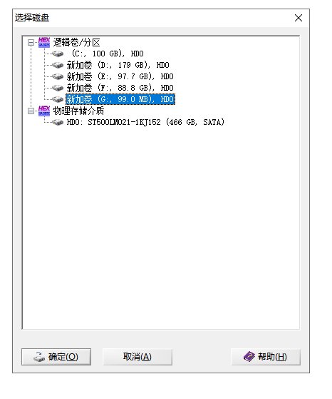
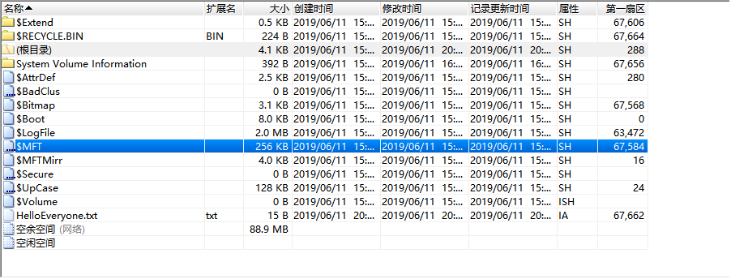
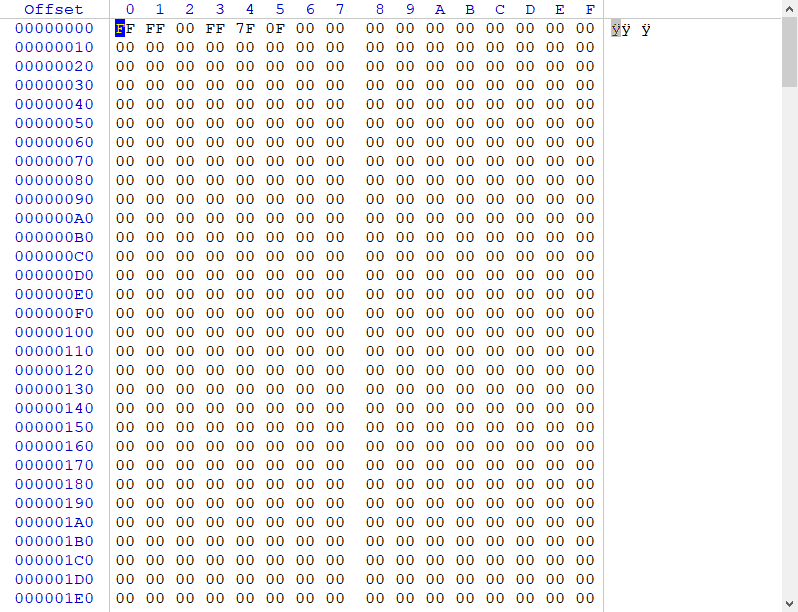
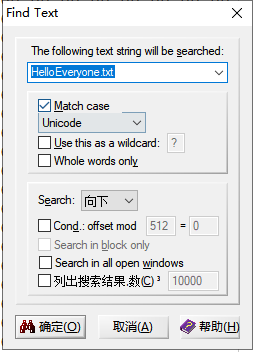
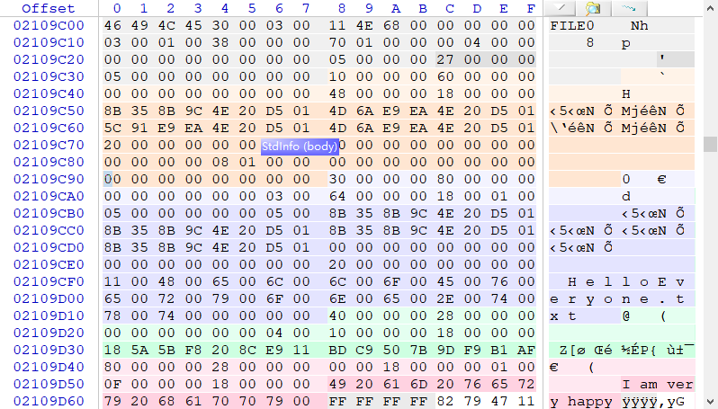
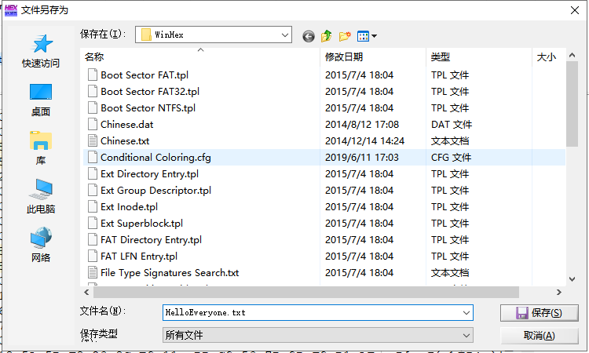
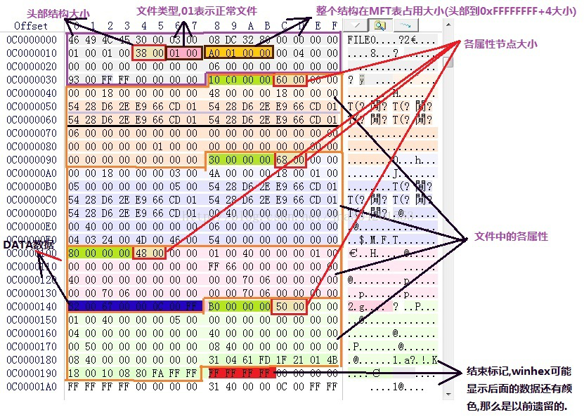

第5节：NTFS数据恢复
NTFS利用B-Tree文件管理方法来跟踪文件在磁盘上的位置。这种技术比在FAT文件系统中使用的链接表技术具备更多的优越性。文件名是顺序存放的因而查找速度更快。B-tree的数据结构使查找一个条目所需的磁盘访问次数最少。 那么，文件是怎么样被删除了的，在NTFS文件系统下文件的删除原理又是怎么的呢。当在NTFS卷中删除一个文件时，系统至少（注意是至少，而不是全部）在三个地方做了改变：
(1)该文件MFT头偏移16H处的一个字节，该字节为0表示文件被删除，为1表示该文件是正被使用的文件，为2表示其是一个目录，为03的时候表示其为删除目录；
(2)其父文件夹的INDEX_ROOT属性（90H属性）或者INDEX_ALLOCATION（A0H属性）；
(3)在位图（$Bitmap）元数据文件中把该文件所占用的簇对应的位置置0，这样好给其他文件腾出空间。
既然知道了文件的删除原理，那么我们对文件的恢复就容易了许多。这里我们从删除原理着手，分几步将数据进行恢复，下面以已完全删除的文件HelloEveryone.txt为例，文本内容为“I am very happy”，运用的工具为WinHex：
- 第一步：由于文件是通过主文件表MFT来确定其在磁盘上的存储位置的，因此我们首先要找到MFT。用WinHex打开被删除文件所在卷，打开MFT元件。


- 第二步：找到MFT后，通过分析MFT中的文件记录信息，(对于大型文件还可能有多个记录与之相对应），其中第一个文件记录称为基本文件记录，而当中存储有其他扩展文件记录的一些信息。

- 第三步：通过文件记录的INDEX_ROOT索引根、INDEX_ALLOCATION索引分配以及位图Bitmap对被删文件加以确认和定位，找到该文件在数据区中的存储位置。WinHex可以直接通过搜索Unicode码检索文件名。


- 第四步：将文件的数据部分复制到一个空白的文本文档中，将文档重命名为原来的名字，并修改为原来文件的后缀，数据恢复成功。

NTFS的文件恢复目前是做不到像FAT那样直接修改磁盘信息达到恢复文件的目的的，至少非微软工程师是很难做到的，因为NTFS本身不是开源的，虽然有一群工程师试图参透里面的细节，但是所发布的文档（网上搜一个叫《NTFS Documentation》的文档）仍然标明很多猜测和无法探明的内容，而且，NTFS本身也在不断变化中....
